Blueprint
Building a MSEL
Overview
What is Blueprint?
Blueprint is a web application created to make the development of a Master Scenario Event Lists (MSEL) and injects easier. With this application, it will further simplify the creation and visualization of the MSEL, allowing the user to select/define the simulated entities, attacks, timeframe, regulators impacted by the scenario, etc. Additionally, it will leverage many advantages over the traditional method of using an excel spreadsheet by facitilating the collaboration between exercise designer's belonging to multiple teams.
Additionally, Blueprint can be integrated with Player, Gallery, CITE and Steamfitter. Integrating Blueprint with these applications will automate the configuration process for an exercise.
In summary, Blueprint will allow users to view, edit, create, and approve events on the MSEL.
For installation, refer to these GitHub repositories.
Blueprint Permissions
To use Blueprint, a user must be assigned Content Developer permissions and be added to their respective team.
There are two levels of permissions in Blueprint that affect the way a user interacts with the Blueprint application and collaborates on the MSEL creation.
- System Admin: Can add users to a team, as well as assign the required permissions to the users. Additionally, users with this permission can view, edit, create, and approve events on the MSEL.
- Content Developer: Can view, edit, create, and approve events on the MSEL.
Most users will have the Content Developer permission, since that is all that is required to be able to create and collaborate with other teams on the MSEL creation.
Refer to this section Administrator Guide for more information on additional administrative actions.
User Guide
Blueprint Dashboard
The Blueprint Dashboard shows created MSELs. Here, users are able to select the desired MSEL to work on, as well create or delete them.
The following image will show some important hotspots about the Blueprint Dashboard. Reference the number on the hotspot to know more about this section.
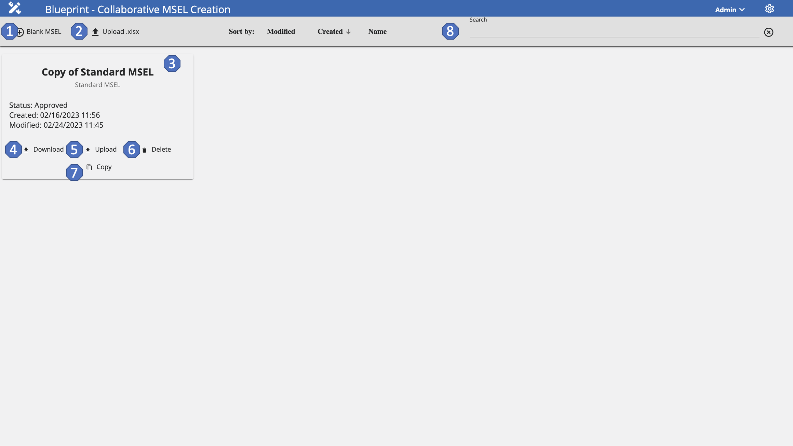
Create a Blank MSEL
Hotspot 1:
One of the main features of Blueprint is the ability to be able to create a MSEL from scratch via the application. This feature is helpful for users since it will eliminate the hassle of using Excel spreadsheets and provide a more user-friendly application that will provide an easier visualization of the information.
Upload an Existing MSEL
Hotspot 2:
If creating a new MSEL from scratch is not desired, users can upload a preexisting MSEL and continue editing it on the application by using this functionality. This is useful to share existing MSEL work without having to add the pieces of information to a blank MSEL one by one.
MSEL Cards
Hotspot 3:
Click on the desire MSEL card to access its information. Here, users can also edit or update the existing information. Changes made will be seen live by other users without the need of sharing a new document every time.
Download
Hotspot 4:
If users desire to have an offline copy of any desired MSEL, they will have the ability to download a copy to their devices by using the Download feature. If by any chance users don’t have an internet connection, this feature will be useful since they will be able to work offline on the MSEL and then upload the MSEL back to the application, so that other users can see any changes made. Although users can work on the MSEL offline, it is not recommended since they will be missing of all of the helpful features that Blueprint offers.
Upload
Hotspot 5:
With the Upload feature, users can update the information from the MSEL Card with the new uploaded information. This feature will modify all the existing information with the one found on the .xlsx file.
Delete
Hotspot 6:
With the Delete feature, users will be able to delete existing MSEL Cards. By deleting the MSEL Card, all the information that was included in the MSEL will be deleted too.
Copy
Hotspot 7:
With the Copy feature, users will be able to create a copy of an existing MSEL Card. With this feature, users will be able to modify the copy, instead of the original. This is useful if the user isn't sure of any new changes or to have a foothold of the information that is needed, instead of creating a new MSEL from scratch.
Search
Hotspot 8:
This functionality will enable users to search for an specific MSEL, in case it is not presented at the top on the dashboard.
MSEL Editing Functionalities
After uploading or creating a MSEL, users will be given the ability to edit any desired information, as well as add additional information to the MSEL.
With this functionality, users can now edit the same MSEL, instead of each user having their own copy and then sending their edits to the individual responsible of recompiling all the edits. By allowing users to access the MSEL on-the-fly, this will ensure that everyone will have the same copy of the MSEL on the day of the live scenario.
Basic Information Tab
On this tab, users will be able to edit basic information and configuration about the MSEL.
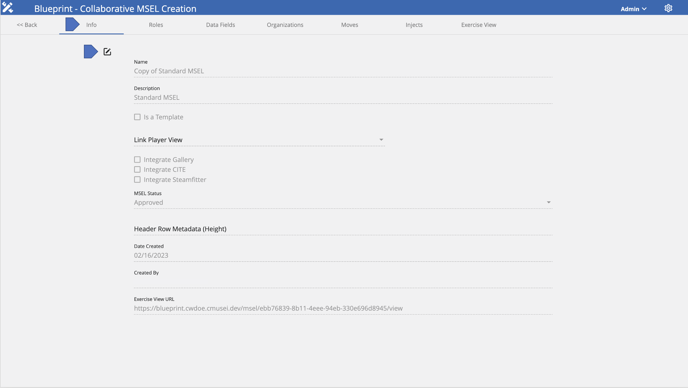
To edit the MSEL's basic information and configuration, follow these next steps:
- Navigate to the Info tab.
- Click on the Edit button.
- Provide a Name for the MSEL.
- Provide a Description about the MSEL.
- If desired to convert into a template, check the Is a Template box.
- If desired to be integrated with Player, add the link for the Link Player View.
- If desired to be integrated with Gallery, check the Integrate Gallery box.
- If desired to be integrated with CITE, check the Integrate CITE box.
- If desired to be integrated with Steamfitter, check the Integrate Steamfitter box.
- To change the MSEL's status to approved, select Aprove within the available options.
- To add an exercise view, add the link to the Exercise View URL field.
Integrations:
- Gallery: Blueprint will add the collections, exhibits, cards, articles, teams, and users specified on the MSEL.
- CITE: Blueprint will add the evaluation, moves, actions, roles, teams, and users specified on the MSEL.
- Player & Steamfitter: Blueprint will automate the adding of injects specified on the MSEL.
Roles Tab
On this tab, users will be able to add and assign teams to the MSEL. Assigned teams will be able to view and edit the MSEL.
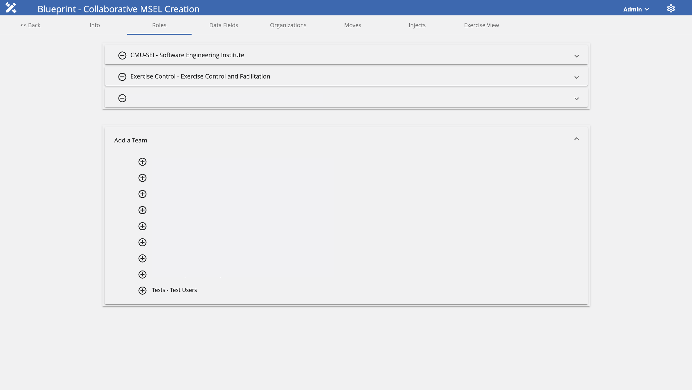
Add a Team
To add a team to the MSEL's Roles, follow these steps:
- Navigate to the Roles tab.
- Click on the Add a Team section and then select the desired team to be added.
- After selecting the team, click on the + button.
Delete a Team
To delete a team from the MSEL's Roles, follow these steps:
- Navigate to the Roles tab.
- Select the desired team to be removed and click on the - button.
Now the team has been added to the MSEL's Roles and members will be able to view and edit the MSEL based on the role assigned to the team. The available roles are:
- Editor: Can view and edit the MSEL.
- Approver: Can view and edit the MSEL, but will have the added feature of approving a MSEL.
- Owner: Owner of the MSEL, can view and edit the MSEL.
Data Fields Tab
On this tab, users will be able to add data fields that are going to be used on the MSEL. These data fields can be compared to the column fields used on Excel spreadsheets.
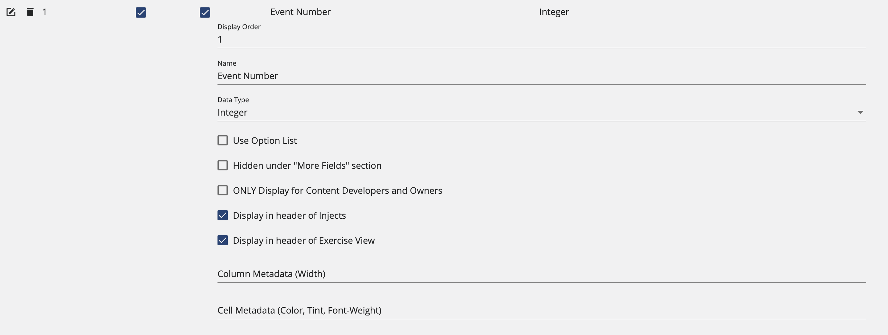
Add a Data Field
To add a Data Field to the MSEL, follow these steps:
- Navigate to the Data Fields tab.
- Click on the + icon from the top left of the screen.
- Add a Display Order to indicate where to place the data field.
- Add a Name for the data field.
- If necessary, check the Selected From a List? box.
- If desired to be hidden, check the Hidden under "More Fields" section box.
- If wanted to be restricted for some users, select the ONLY Display for Content Developers and Owners box.
- If desired, select the Display in header of Injects box.
- If desired, select the Display in header of Exercise View box.
- If integrated with Gallery, add the Gallery Article Parameter.
- If desired to be a specific size, add the Column Metadata (Width).
- If desired to be a specific color, add the Column Metadata (Color).
Delete a Data Field
To delete a Data Field from the MSEL, follow these steps:
- Navigate to the Data Fields tab.
- Select the desired data field to be deleted and click on the Trash Can icon.
Edit a Data Field
To edit an existing Data Field, follow these steps:
- Navigate to the Data Fields tab.
- Select the data field to be edited and click on the Edit button to make any changes to the existing configurations.
- After making all the necessary changes, click on the checkmark to save them.
Search For a Data Field
To search for a specific Data Field, follow these steps:
- Navigate to the Data Fields tab.
- Click on the Search Bar and add the name of the data field desired.
Organizations Tab
On this tab, users will be able to add all the related organizations that are going to be used on the MSEL, as well as on the live exercise. Here, Organization Cards with their information are added. Additionally, users can create Organization Cards from scratch or from a template.
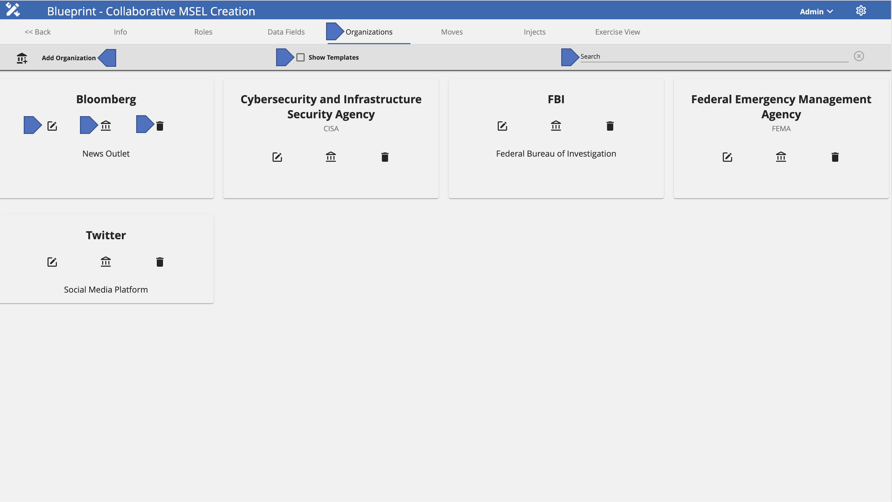
Add an Organization Card From Scratch

To add an Organization Card from scratch, follow these steps:
- Navigate to the Organizations tab.
- Click on Add Organization.
- Then, you will get a pop up to add the organization's details.
- Add a Name for the organization.
- Add a Short Name for the organization, such as an acronym.
- Add a Summary describing the organization.
- Add an Email from the organization.
- If desired, a Description can be added.
- Click Save.
Add an Organization Card From Template
To view existing Organization Card Templates and create an organization from a template, follow these steps:
- Navigate to the Organizations tab.
- Check the Show Templates box.
- Select the desired template and click on the + icon from the card.
- Here, users will be able to edit all necessary information to create a new organization.
- After modifying the desired details, click Save.
Edit an Organization
To edit an existing organization, follow these steps:
- Navigate to the Organizations tab.
- Select the desired card to be edited and click on the Edit button from the card.
- Here, users will be able to edit all necessary information.
- Click Save.
Delete an Organization
To delete an Organization Card, follow these steps:
- Navigate to the Organizations tab.
- Select the desired card to be deleted and click on the trash can icon from the card.
Search for an Organization
To search for a specific Organization Card, follow these steps:
- Navigate to the Organizations tab.
- Click on the Search Bar and type the name of the desired organization.
Moves Tab
On this tab, users will be able to add all the related exercise Moves to the MSEL.
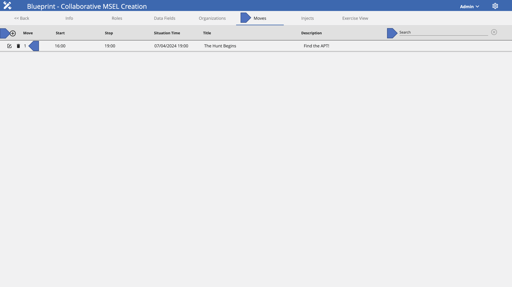
Add a Move
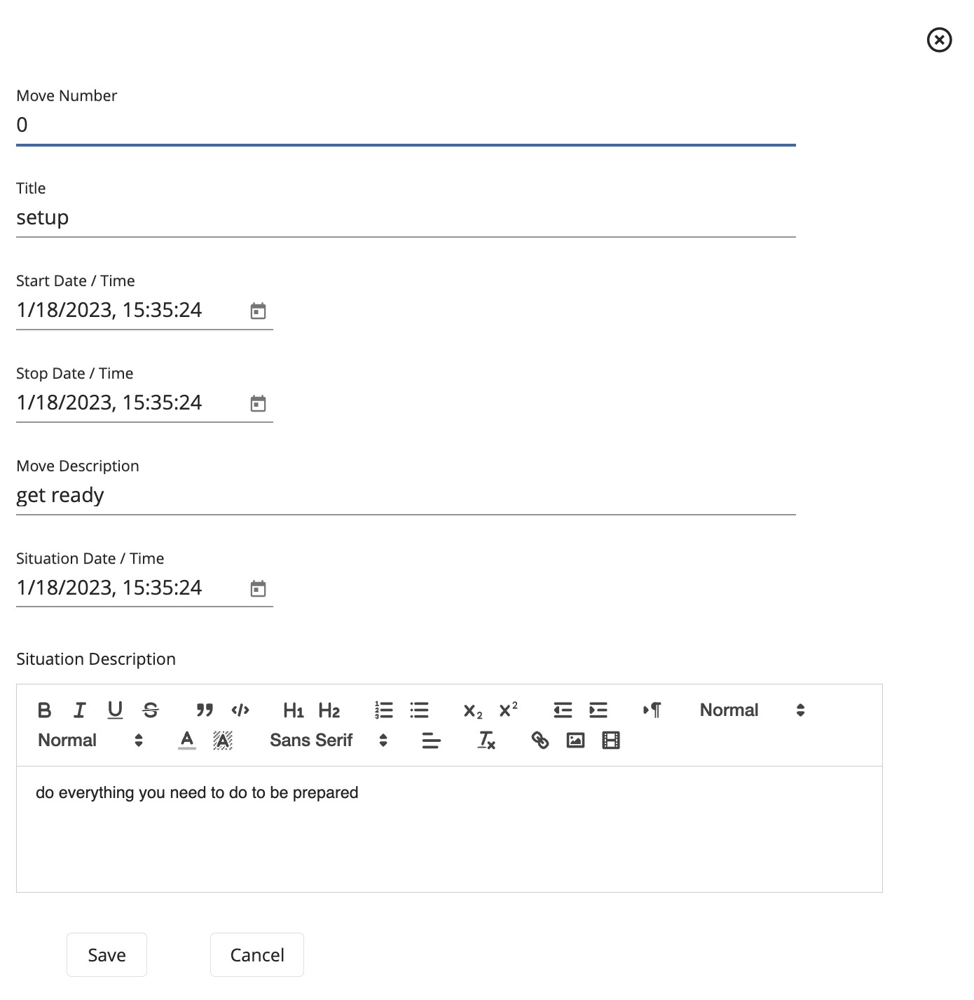
- Navigate to the Moves tab.
- Click on the + icon.
- Add the Move Number to indicate its order.
- Add the Title for move.
- Indicate the Start Time of the move.
- Indicate the Stop Time of the move.
- Add the Move Description to describe the move.
- Indicate the Situation Date of the move.
- Add a Situation Description to describe the situation.
- Click Save.
Edit a Move
To edit the move's details, follow these steps:
- Navigate to the Moves tab.
- Select the move you want to edit and click on the Edit button for the corresponding move.
- Here, users will be able to edit all the desired details.
- Click on the Checkmark to save the details.
Delete a Move
To delete a move from the MSEL, follow these steps:
- Navigate to the Moves tab.
- Select the move you want to delete and click on the Trash Can button for the corresponding move.
Search For a Move
To search for a specific move, follow these steps:
- Navigate to the Moves tab.
- Click on the Search Bar and type the name of the desired move.
Injects Tab
On this tab, users will be able to add all the related injects to the MSEL.
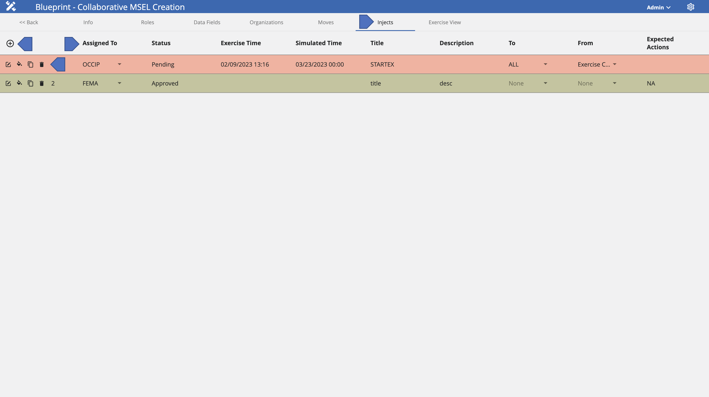
Add a New Inject
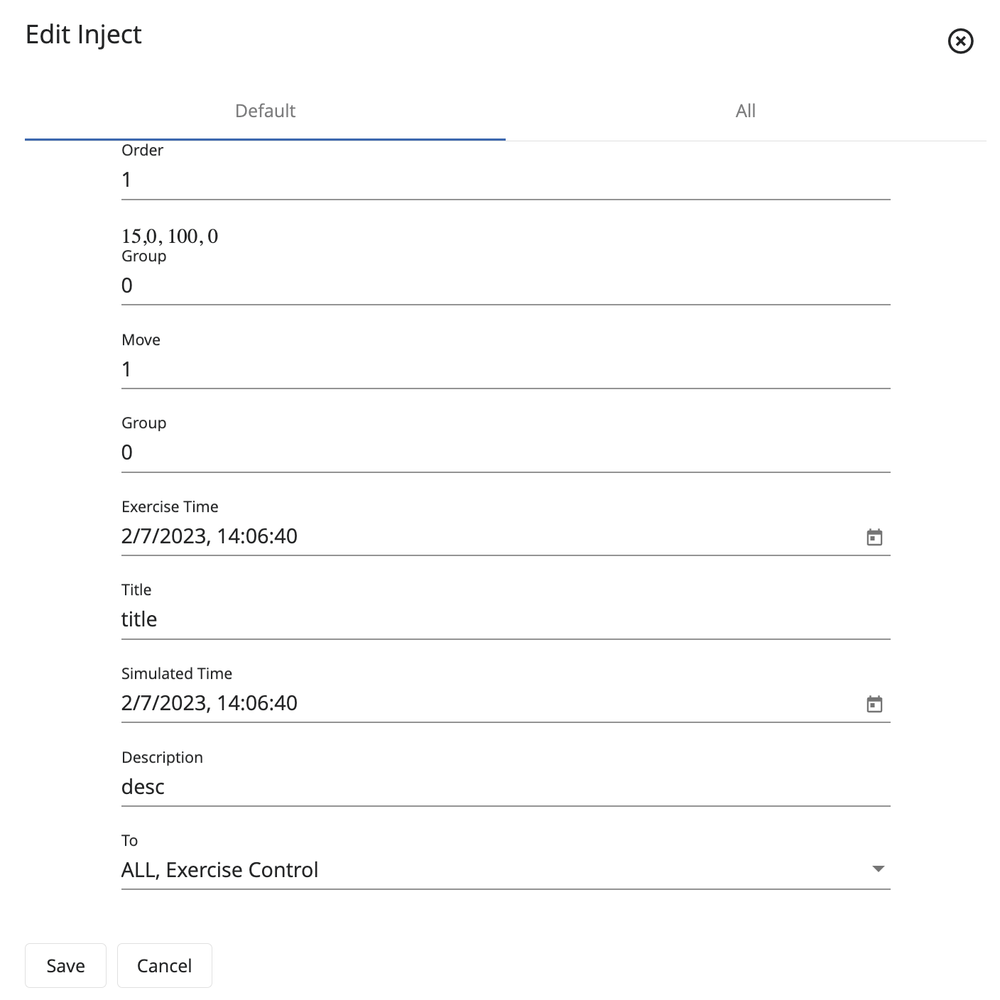
To add a new inject, follow these steps:
- Navigate to the Injects tab.
- Click on the + icon found on the top left.
- Add an Order to indicate the position of the inject.
- Add a Group.
- Indicate the Move for the inject.
- Select the Assigned To from the given options.
- Add the Status for the inject.
- Indicate the Exercise Time.
- Indicate the Simulated Time.
- Add a Title for the inject.
- Add the Description for the inject.
- Select the To from the given options.
- Select the From from the given options.
- If necessary, add any additional Details.
- If desired, add the Expected Actions from this inject.
- Click Save.
Add Color to an Inject
To add a color to an existing inject, follow these steps:
- Navigate to the Injects tab.
- Select the desired inject to be edited and click on the Bucket icon.
- Here, users will be able to select the desired color.
Create an Inject From a Template
To create an inject from an existing template, follow these steps:
- Navigate to the Injects tab.
- Select the desired inject and click on the Copy button from the desired inject.
- Here, users will be able to edit the necessary fields for the new inject.
- Click on the Checkmark to save changes.
Delete an Inject
To delete an inject, follow these steps:
- Navigate to the Injects tab.
- Select the desired inject to be deleted and click on the Trash Can icon from the inject.
Exercise View
After making all the necessary edits, the "Exercise View" tab will recompile all the information added during the edits and display it to the users in an organized view. Here, users will be able to see all the information from the MSEL and be able to locate if anything is wrong or missing.
With this organized view, users will be able to understand the important key factors of the MSEL, as well as provide an on-the-fly view to access and see any edits done to the MSEL.
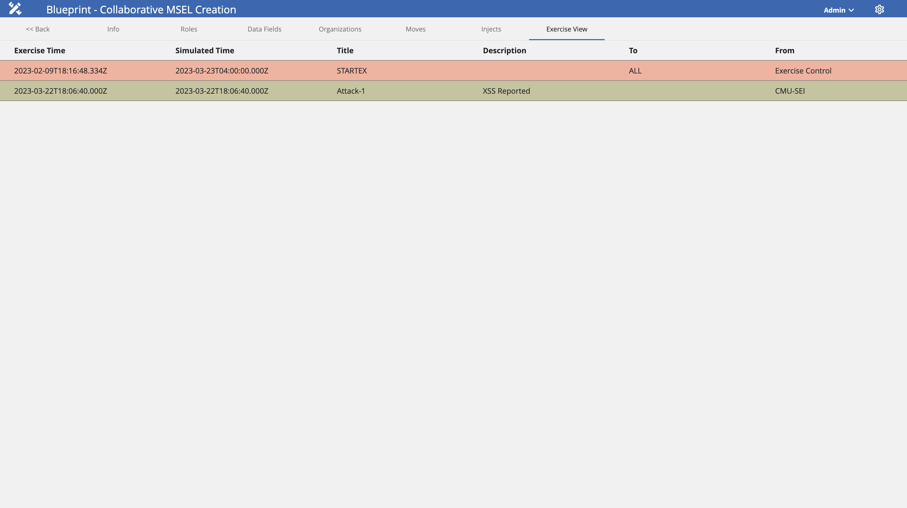
Administrator Guide
Teams
The following image shows the Teams Administration Page. Here, administrators can add, edit, and delete teams. To be able to use the Blueprint application, administrator should assign a team to desired users.
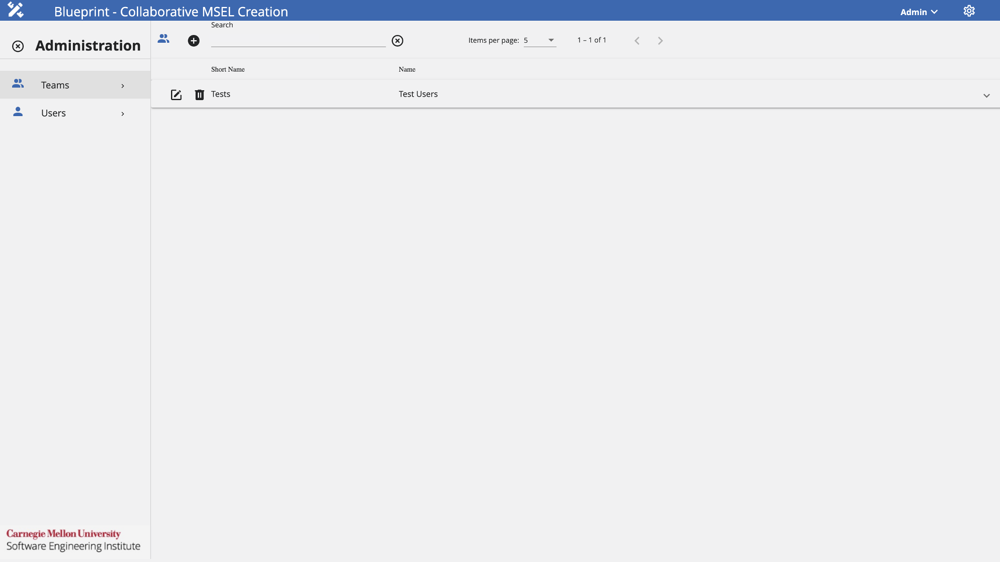
Add a Team
Assuming that the user has been granted the appropriate permissions by the exercise administrator, follow these steps to add a team.

- Click on the Settings Cog found in the top-right corner of the screen.
- Under the Teams Administration View, click +.
- Add a Name for the team.
- Add a Short Name for the team, which could be the team's acronym.
- Click Save.
If necessary, a team can be deleted by clicking on the Trash Icon next to the desired team.
In the same way, a team can be edited by clicking on the Edit Icon next to the desired team.
Add/Remove Users From a Team
To configure a team for an exercise, administrators will need to add users to their respective teams. To do this, follow these steps.
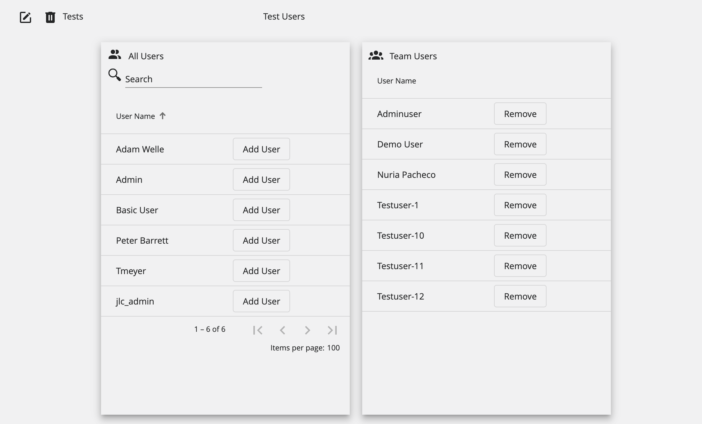
- Select the team to be configured and click on it to expand its configuration details.
- Under the All Users tab, users that have not been assigned to the team will be shown. To add them to the team, click on Add User.
- Under the Team Users tab, users that have already been assigned to the team will be shown. To remove a user from the team, click on Remove.
Users
The following image shows the Users Administration Page. Here, administrators can add and delete users. Additionally, administrators will be able to assign the necessary permissions to each user.
The available permissions are:
- System Admin: Can use all administration privileges on the Blueprint application.
- Content Developer: Can view, edit, create, and approve events on the MSEL.
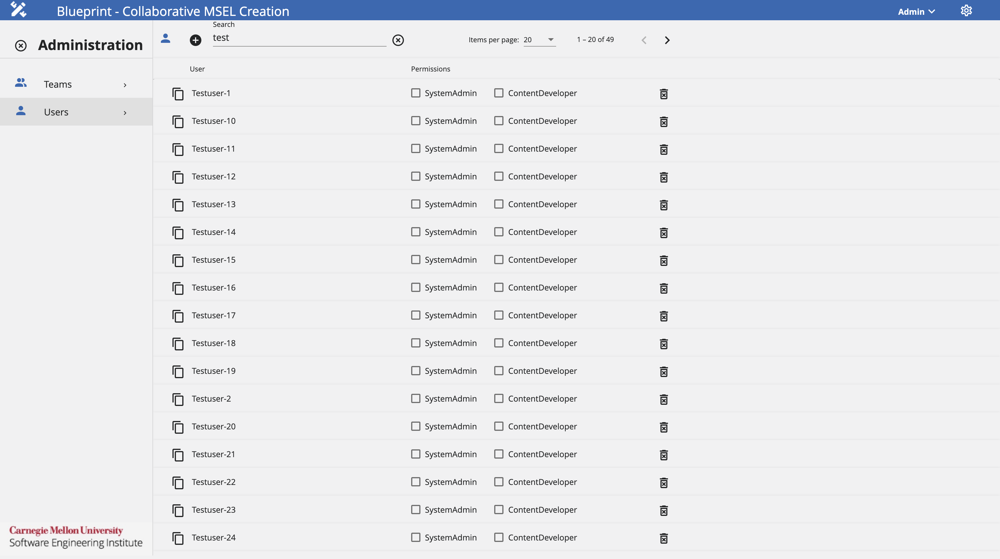
Add a User
Assuming that the user has been granted the appropriate permissions by the exercise administrator, follow these steps to add a user.
- Under the Users Administration View, click +.
- Add a User ID that will be unique for the user.
- Add a User Name that will identify the user to be added.
- Click Save represented by a user with a + sign.
- After adding the user to Blueprint, select the desired permissions to be assigned by clicking on the checkboxes next to the user.
If necessary, a user can be deleted by clicking on the Trash Icon next to the desired user.
In the same way, a user can be edited by clicking on the Edit Icon next to the desired user.
Glossary
The following glossary provides a brief definition of key terms and concepts as they are used in the context of the Blueprint application.
- Blueprint: Web application created to make the development of a MSEL and injects easier.
- Content Developer Permission: Can view, edit, create, and approve events on the MSEL.
- Injects: Specific scenario events or messages within the scenario that prompt users to implement designated actions.
- Moves: A defined period of time during an exercise, in which a series of injects are distributed for users to discuss and assess the current incident severity.
- MSEL: (Master Scenario Events List) provides a timeline for all expected events and injects.
- System Admin Permission: Can add users to a team, as well as assign the required permissions.